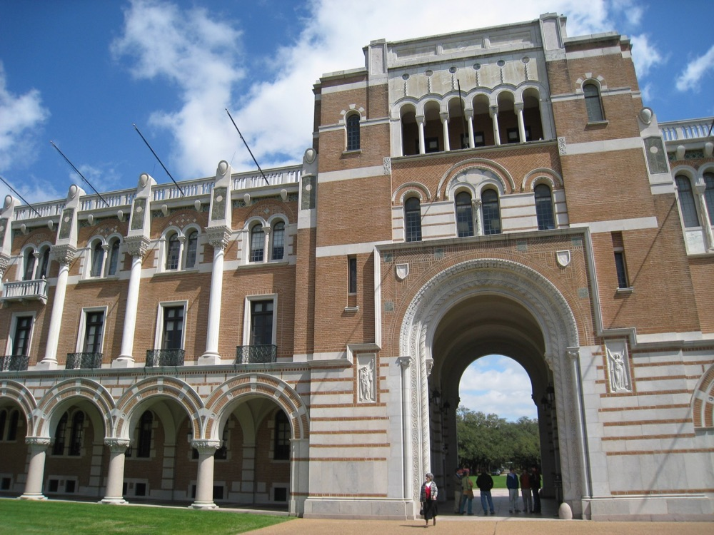

Efficient AI
Scalable training, distributed inference, and optimization across models, compilers, and heterogeneous accelerators.
MODELS + COMPUTERICE UNIVERSITY / SPRING 2027
AI, systems & networking.
For a sustainable future.
A one-day workshop connecting the people building the next generation of intelligent infrastructure.
Researchers, practitioners, and students welcome.

01 / THE WORKSHOP
GeniSys explores synergy among next-generation AI, systems, and networking for a sustainable future.
Join researchers across algorithms, systems software, and networked platforms to discuss scalable, reliable, secure, and energy-efficient AI.
Scalable training, distributed inference, and optimization across models, compilers, and heterogeneous accelerators.
MODELS + COMPUTECommunication-efficient learning, networked platforms, and resilient infrastructure for distributed AI workloads.
SYSTEMS + NETWORKSEnergy-aware design, secure deployment, and responsible use of computing resources at every layer.
EFFICIENCY + RELIABILITYInvited talks · Research posters & demos · Panels · Student lightning talks
02 / SHARE YOUR RESEARCH
Bring your recent work, or give your published work a new audience.
Recent research and previously published work in AI, systems, and networking are welcome. Work connecting these areas is especially relevant.
Explain the research problem, your approach, and the results or insights you want to discuss. We recommend a 36 in wide × 48 in tall poster (portrait). File requirements will be announced.
Use the submission form below and follow the instructions in Box to complete your upload.
Submission deadline: to be announced.
Yes. Previously published work is welcome, alongside recent research. Use the session to share your findings with the GeniSys community and discuss new directions.
Start with a clear research question, your approach, and the results or insights you would like to discuss. We recommend a 36 in wide × 48 in tall poster (portrait; approximately 91 × 122 cm). Submit your research poster using the Box form below. File requirements will be announced.
Hybrid workshop participation is planned. Arrangements for remote poster presentations have not yet been announced.
POSTER SUBMISSION
Upload your recent research or previously published work.
Having trouble with the form? Open it directly in Box.
03 / THE DAY AT A GLANCE
All times are local to Houston.
Spring 2027 · Exact date to be announced.
08:30–11:45
Registration, a keynote, and invited talks on AI systems and networking.
11:45–13:00
Meet researchers, explore posters and demos, and share your work.
13:00–17:00
A panel, student lightning talks, and a research roundtable.
Speakers will be announced. All session times and topics are tentative.
04 / FIND YOUR WAY
Ralph S. O’Connor Building for Engineering and Science
Fifth-floor conference room
Rice University · Houston, Texas
Open in Google MapsThe map marks the building. The workshop takes place in the conference room on the fifth floor.
05 / THE PEOPLE BEHIND GENISYS
Department of Computer Science, Rice University